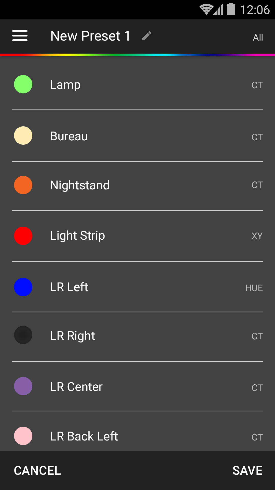
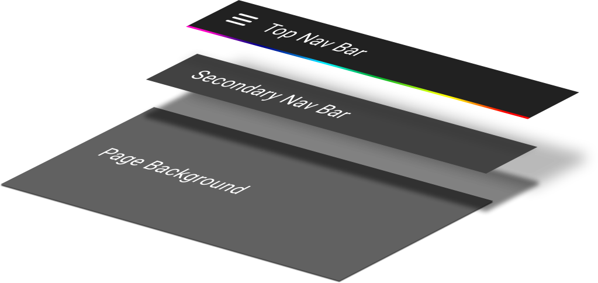
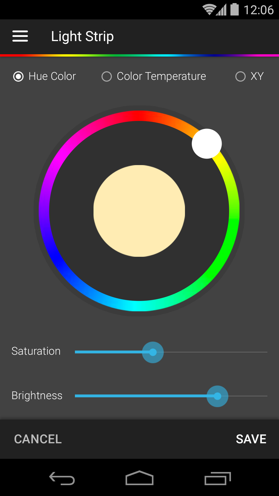

Visual & UI Design
Hue Pro is a mobile app that helps owners of Philips Hue light bulbs manage their home mood lighting. With the application, users can remotely turn off, turn on, dim, and change the hue of individual or sets of light bulbs. Around 2015, the owner and developer of Hue Pro had successfully pushed Hue Pro to the top of the Google Play store. It surpassed Philips' own mobile app as the best application to manage your light bulbs. It was around this time the owner asked myUXteam for conceptual re-design.
Our first task was to come up with a new visual design that distilled and simplified the app's navigation and UI elements. In our creative iterations, we really liked the concept of making light & shadow a key facet to the experience. We wanted users to play with light, shadow, and color both in the real world and inside the app. We wanted the real world and the app to be mirrored, so naturally, light became a key visual concept. With our creative conclusion, we discovered not only a visual theme, but we were able to design an app experience that communicated more clearly.
Coincidentally, we started this project around the time Google published its Material Design principles. Since Hue Pro, in its first iteration was an Android application, we were asked to imbue those concepts into the experience. The timing couldn't have been better. Material happened to be a great concept and medium in our theme of light, shadow, and color. We borrowed the concept by layering components of the app's UI, e.g. top navigation bar, secondary navigation, and body content, so that the app could clarify information hierarchy.
The light bulbs, serving as the reason for Hue Pro's existence, also became a fixture in the experience. We leaned heavily on skeuomorphic design to mirror our virtual light bulbs with their real-world counterparts. When the real light bulbs were turned off, our digital versions should look like them. They should also dim and brighten exactly like their real-world counter parts.
After weeks of designs, we shipped numerous high-fidelity wireframes that conveyed an entirely new app experience. Our designs were then developed and released in the Play store in 2015, and then they served as visual blueprints for the iOS version that came out months later.
Previous Project: Peppermill Reno Next Project: TSP VMI